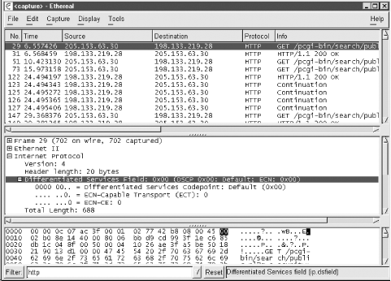
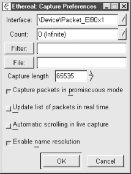
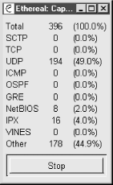
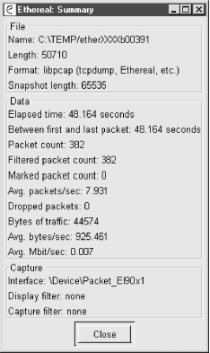

|  |
5.6. Packet Analyzers
Even with the tools just described, the real limitation with tcpdump is interpreting the data. For many uses, tcpdump may be all you need. But if you want to examine the data within packets, a packet sniffer is not enough. You need a packet analyzer. A large number of packet analyzers are available at tremendous prices. But before you start spending money, you should consider ethereal.5.6.1. ethereal
ethereal is available both as an X Windows program for Unix systems and as a Microsoft Windows program. It can be used as a capture tool and as an analysis tool. It uses the same capture engine and file format as tcpdump, so you can use the same filter syntax when capturing traffic, and you can use ethereal to analyze tcpdump files. Actually, ethereal supports two types of filters, capture filters based on tcpdump and display filters used to control what you are looking at. Display filters use a different syntax and are described later in this section.5.6.1.1. Using ethereal
Usually ethereal will be managed entirely from a windowing environment. While it can be run with command-line options, I've never encountered a use for these. (There is also a text-based version, tethereal.) When you run ethereal, you are presented with a window with three initially empty panes. The initial screen is similar to Figure 5-1 except the panes are empty. (These figures are for the Windows implementation of ethereal, but these windows are almost identical to the Unix version.) If you have a file you want to analyze, you can select File Open. You can
either load a tcpdump file created with the
-w option or a file previously saved from
ethereal.
Open. You can
either load a tcpdump file created with the
-w option or a file previously saved from
ethereal.

Figure 5-1. ethereal
To capture data, select Capture
Start. You will be presented with a Capture Preferences screen like
the one shown in Figure 5-2. If you have multiple
interfaces, you can select which one you want to use with the first
field. The Count: field is used to limit the number of packets you
will collect. You can enter a capture filter, using
tcpdump syntax, in the Filter: field. If you
want your data automatically saved to a file, enter that in the File:
field. The fifth field allows you to limit the number of bytes you
collect from the packet. This can be useful if you are interested
only in header information and want to keep your files small. The
first of the four buttons allows you to switch between promiscuous
and nonpromiscuous mode. With the latter, you'll collect only
traffic sent to or from your machine rather than everything your
machine sees. Select the second button if you want to see traffic as
it is captured. The third button selects automatic scrolling.
Finally, the last button controls name resolution. Name resolution
really slows ethereal down. Don't enable
name resolution if you are going to display packets in real time!
Once you have everything set, click on OK to begin capturing data.

Figure 5-2. ethereal Capture Preferences
While you are capturing traffic, ethereal will display a Capture window that will give you counts for the packets captured in real time. This window is shown in Figure 5-3. If you didn't say how many frames you wanted to capture on the last screen, you can use the Stop button to end capture.
Figure 5-3. ethereal Capture
Once you have finished capturing data, you'll want to go back to the main screen shown in Figure 5-1. The top pane displays a list of the captured packets. The lower panes display information for the packet selected in the top pane. The packet to be dissected is selected in the top pane by clicking on it. The second pane then displays a protocol tree for the packet, while the bottom pane displays the raw data in hex and ASCII. The layout of ethereal is shown in Figure 5-1. You'll probably want to scroll through the top pane until you find the traffic of interest. Once you have selected a packet, you can resize the windows as needed. Alternately, you can select Display Show Packet in New Window
to open a separate window, allowing you to open several packets at
once.
The protocol tree basically
displays the structure of the packet by analyzing the data and
determining the header type and decoding accordingly. Fields can be
expanded or collapsed by clicking on the plus or minus next to the
field, respectively. In the figure, the Internet Protocol header has
been expanded and the Type-Of-Service (TOS) field in turn has been
expanded to show the various values of the TOS flags. Notice that the
raw data for the field selected in the second pane is shown in bold
in the bottom pane. This works well for most protocols, but if you
are using some unusual protocol, like other programs,
ethereal will not know what to do with it.
ethereal
has several other useful features. For example, you can select a TCP
packet from the main pane and then select Tools Follow TCP
Stream. This tool collects information from all the packets in the
TCP session and displays the information. Unfortunately, while
convenient at times, this feature makes it just a little too easy to
capture passwords or otherwise invade users' privacy.
The Tools Summary gives you
the details for data you are looking at. An example is shown in Figure 5-4.

Figure 5-4. ethereal Summary
There are a number of additional features that I haven't gone into here. But what I described here is more than enough for most simple tasks.5.6.1.2. Display filters
Display filters allow you to selectively display data that has been captured. At the bottom of the window shown in Figure 5-1, there is a box for creating display filters. As previously noted, display filters have their own syntax. The ethereal documentation describes this syntax in great detail. In this case, I have entered http to limit the displayed traffic to web traffic. I could just as easily enter any number of other different protocols -- ip, udp, icmp, arp, dns, etc. The real power of ethereal 's display filters comes when you realize that you don't really need to understand the syntax of display filters to start using them. You can select a field from the center pane and then select Display
Match Selected, and ethereal will construct and
apply the filter for you. Of course, not every field is useful, but
it doesn't take much practice to see what works and what
doesn't work.
The primary limitation of this approach
comes in constructing compound filters. If you want to capture all
the traffic to or from a computer, you won't be able to match a
single field. But you should be able to discover the syntax for each
of the pieces. Once you know that
ip.src==205.153.63.30 matches all IP traffic with
205.153.63.30 as its source and that
ip.dst==205.153.63.30 matches all IP traffic to
205.153.63.30, it isn't difficult to come
up with the filter you need, ip.src==205.153.63.30
or ip.dst==205.153.63.30. Display filters are
really very intuitive, so you should have little trouble learning how
to use them.
Perhaps more than any other tool described in this book,
ethereal is constantly being changed and
improved. While this book was being written, new versions were
appearing at the rate of about once a month. So you should not be
surprised if ethereal looks a little different
from what is described here. Fortunately,
ethereal is a well-developed program that is
very intuitive to use. You should have little trouble going on from
here.
|  | |
| 5.5. Analysis Tools |  | 5.7. Dark Side of Packet Capture |